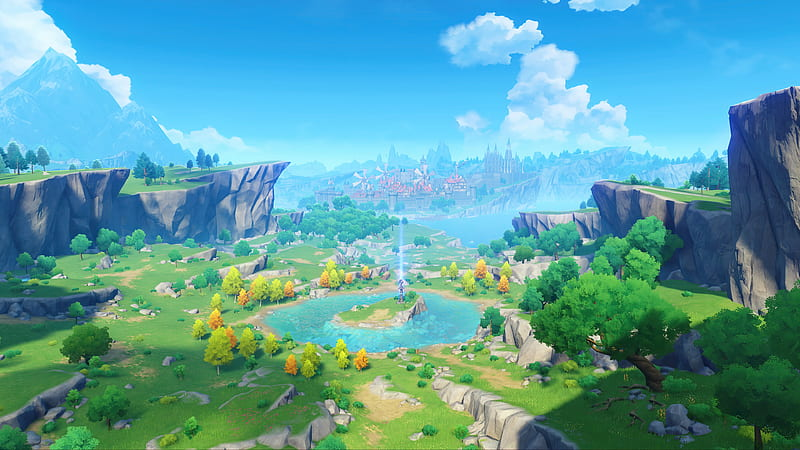
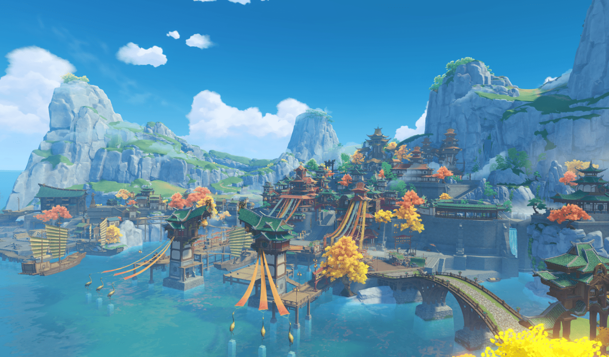
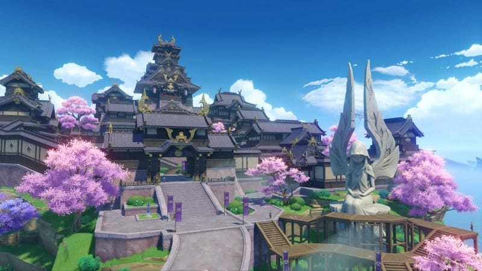
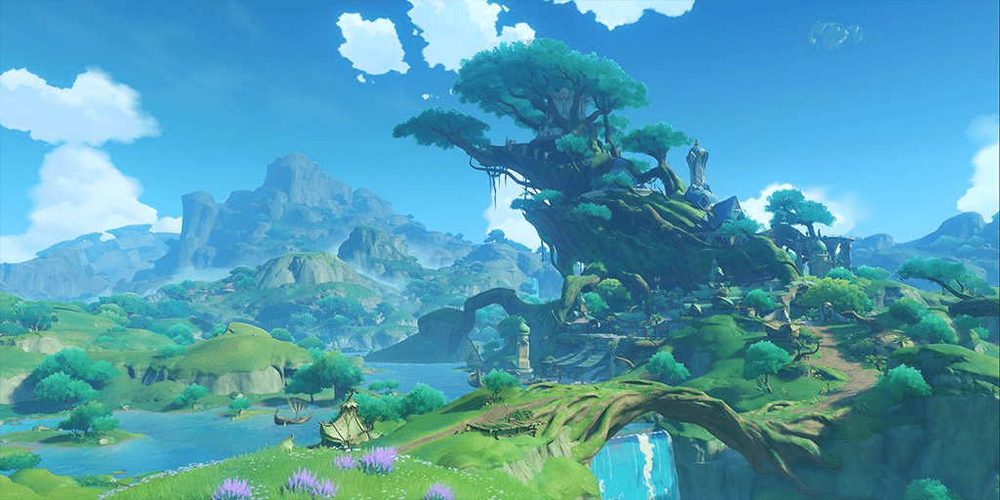

TEYVAT
Kamu telah tiba di Teyvat,
sebuah dunia fantasi di mana tujuh elemen mengalir, berpadu, menari dan beradu.
Di masa lampau, para dewa di tanah ini —— Archons, memberkati dunia dengan kekuatan elemental.
Dengan kekuatan tersebut, manusia membentuk peradaban yang teramat indah di seluruh dunia. Akan tetapi
500 tahun lalu, keruntuhan peradaban kuno memutarbalikkan segalanya...
Malapetaka yang melanda dunia kini telah sirna, tetapi kedamaian masih belum terpulihkan.

Monstad
Kota kebebasan yang terletak di bagian timur laut Teyvat, berdiri dengan megah di atas pulau
di tengah-tengah danau. Angin berhembus melewati pegunungan dan lahan-lahan luas, sambil
membawa harum aroma dari benih-benih dandelion — berkat dari Dewa Anemo, Barbatos —
yang berterbangan dari Cider Lake sampai ke Mondstadt, guna mencari tempat untuk
menanamkan akarnya.
Details

Liyue
Pelabuhan yang terletak di bagian Teyvat Timur. Gunung-gunung berdiri dengan gagah di
sekeliling sehamparan hutan batu, mendampingi sebuah lahan luas dan sungai yang penuh
kehidupan, membuat keindahan pemandangan yang asri dan alami di Liyue, dilukiskan dengan
warna yang berbeda-beda seiring bergantinya musim. Ada berapa banyak kira-kira berkat yang
diberikan oleh Dewa Geo di antara bebatuan pegunungan Liyue?
Details

Inazuma
Kepulauan Tertutup Jauh di Timur Teyvat
Hadapilah badai petir yang tiada henti, dan jejakkan kaki di pulau yang bergelimang maple
merah dan sakura. Di pesisir pantai yang berliku, di tebing yang menjulang tinggi, di hutan dan
gunung yang penuh dengan rahasia, saksikanlah Keabadian yang dikejar oleh Yang Mulia —
sang Narukami Ogosho Yang Mahakuasa.
Details

Sumeru
Kota universitas yang terletak di tengah sisi barat Teyvat.
Sebuah bangsa eksotis di mana terdapat hutan hujan yang rimbun dan gurun pasir yang
tandus. Buah kebijaksanaan yang tak terhitung jumlahnya berakar, berkembang, dan layu di
sini. Setiap Traveler yang datang ke sini dapat memperoleh pengetahuan yang berharga dengan
melewati hutan, mendaki tangga pengetahuan, atau mengungkap reruntuhan kuno di gurun
pasir.
Details